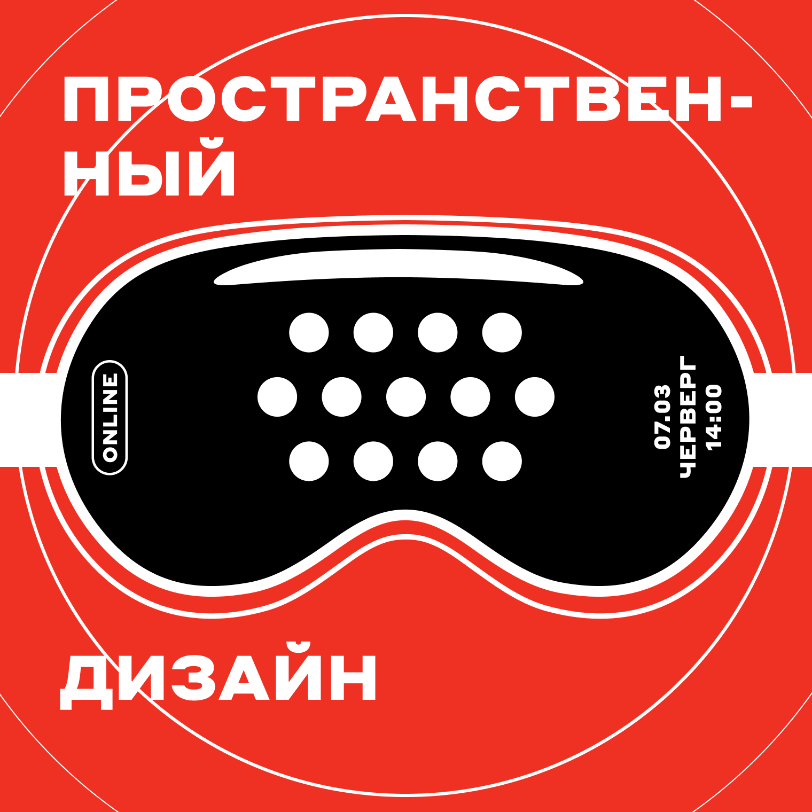

My Projects
Here are some of the projects I have worked on:

Альфа-Банк, команда Кредиты
Работал в трёх продуктовых командах кредитования B2B. Совместно с продакт-оунерами, разработчиками, исследователями, редакторами, заказчиками от бизнеса и банковскими экспертами.
Альфа-Банк, команда Платежи
Работал в команде платежей и переводов интернет-банка B2B. Обновил страницу отправления платежей и переводов, для упрощения регулярных операций. На основе UX-исследований и интервью с пользователями, запустили новые услуги в разделе платежей.
Мегафон. Продуктовый дизайнер
Работал в B2B подразделении, в команде создания и развития программ для колл-центра. Упростил работу оператора колл-центра. Сократил время обслуживания клиентов, с помощью нового дизайна интерфейса главного экрана.